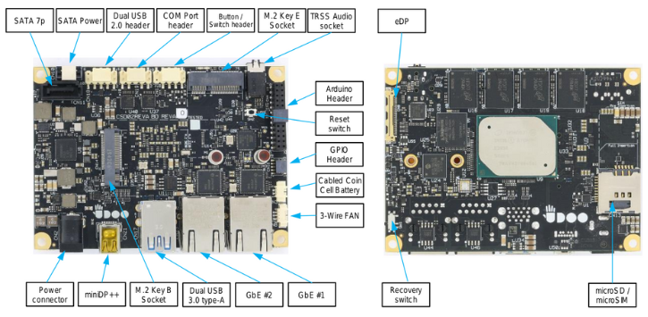
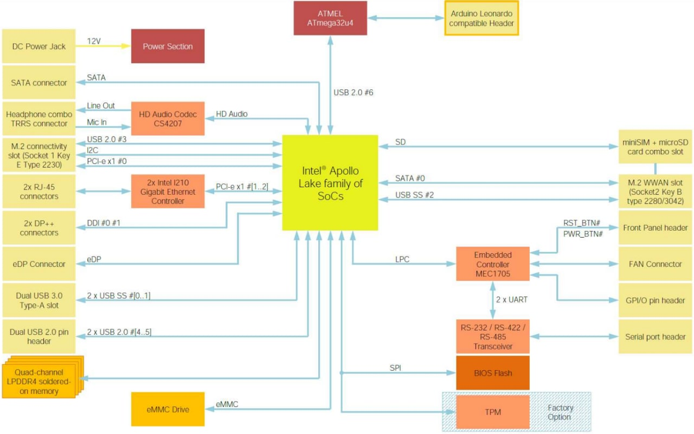

BLOCK DIAGRAM

FULL SPECS INTEL APOLLO LAKE SOC
|
|
|
 |
Processor |
Intel® Atom® X-series 64 bit 14 nm: Quad Core up to 2.00 GHz |
|
Core |
4 |
|
Memory |
LPDDR4 soldered-down memory up to 8GB RAM quad-channel |
|
Graphics |
Intel® HD Graphics 500 GPU up to 700 MHz 18 execution units |
|
Video Interfaces |
1x eDP, 1x miniDP++ connectors |
|
Mass Storage |
eMMC disk up to 64 GB soldered on board, standard SATA connector, M.2 Key B SSD slot, Micro SD card slot |
|
Networking |
Gigabit Ethernet connector, M.2 Key E slot for optional Wireless+BT modules, mini SIM connector for use of M.2 Key B modems |
|
USB |
2 x USB 3.0 type-A sockets |
|
Audio |
Microphone + Headphone TRRS combo connector |
|
Multimedia |
HW Video decode: HEVC (H.265), H.264, JPEG/MJPEG, VP9, MPEG2, VC-1 and WMV9 |
|
Serial Ports |
2x UART ports |
|
Other Interfaces |
IR interface - GPIOs - signals on expansion connector |
|
Operating System |
Windows 10, 8.1, 7 64bit, Linux |
|
Board Dimensions |
picoITX form factor 72x100 mm (2.83” x 3.93”) |
ATMEL® ATMEGA32U4 MICROCONTROLLER
|
|
|
|
Microcontroller |
Atmel® ATmega32U4 module |
|
Other Interfaces |
SPI Flash JTAG connector |
|
Arduino Pinout |
Easy to use with a custom 2 rows pinout
Expandable with I/O shield to have the standard Arduino Pinout R3 |
|
Digital I/O Pins |
up to 23x digital input/output (7 PWM) |
|
Analog I/O Pins |
12 (10 Bits of resolution) |
Heads up! The communication between the Apollo Lake SoC and the Microchip ATmega32U4 module comes through a USB interface, exactly like an Arduino™ Leonardo board connected to an external PC.